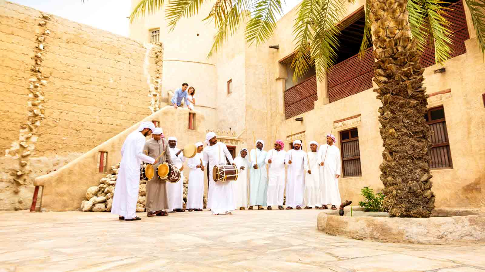

Ajman
Ajman, one of the smaller emirates in the United Arab Emirates, covers an area of approximately 260 square kilometers. Despite its size, it has experienced significant growth and development, emerging as a key center for trade, commerce, and economic diversification.
The ruler of Ajman, Sheikh Humaid bin Rashid Al Nuaimi, has played a pivotal role in shaping the emirate's trajectory. Under his leadership, Ajman has become an attractive destination for both domestic and international investors. Its strategic location, with easy access to the major cities of Dubai and Sharjah, has made it an important trade hub. The emirate has actively sought to diversify its economy, with a particular focus on the industrial and tourism sectors.
Ajman's economic transformation is underscored by its modern infrastructure, including industrial zones, port facilities, and a range of tourism and hospitality offerings. The emirate is home to beautiful beaches, cultural attractions, and vibrant souks, making it an appealing destination for tourists and residents alike.Ajman, one of the smaller emirates in the United Arab Emirates, covers an area of approximately 260 square kilometers. Despite its size, it has experienced significant growth and development, emerging as a key center for trade, commerce, and economic diversification.